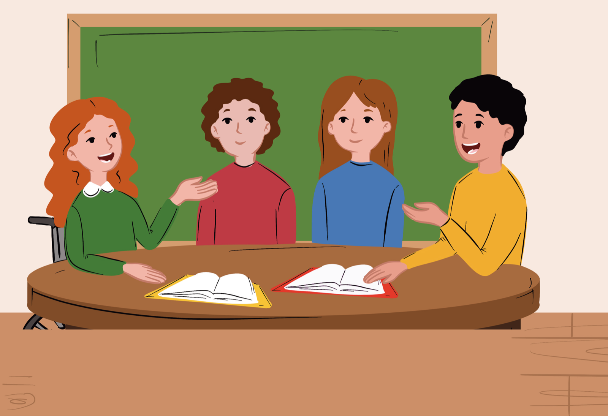

Mirëkuptimi, solidariteti, empatia dhe respekti ndaj të tjerëve
Mendimi ndryshe
Situata 1.
Mësuesi i lëndës Shoqëria dhe mjedisi e nisi orën me një pyetje që nxiti diskutim:
- Çfarë mendoni, është më mirë të shikoni një film apo të lexoni një roman?
Andi dhe Tea reaguan menjëherë, duke thënë se filmi ta jep ngjarjen me pamje, është më i lehtë për t'u mbajtur në mend dhe ta kursen kohën. Por, Trina dhe Agroni nuk e përkrahën këtë mendim. Ata thanë se libri është më i mirë, sepse të lë hapësirë për të menduar, për të imagjinuar dhe të bën më kreativ.
Kështu, të gjithë u përfshinë në diskutim, duke dhënë mendime të ndryshme, por gjithmonë duke pritur radhën për të folur. Mësuesi e dinte që të dy kishin vlerën e vet.
